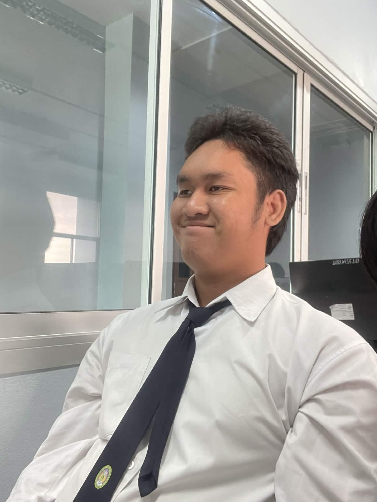

1. Roblox custom Survival Mechanics System
รายละเอียด: พัฒนาชุดสคริปต์ไอุกรณ์สยองขวัญในเกม เช่น ระบบไฟฉาย ตะเกียงน้ำมัน และระบบคำนวณค่าความหลอน (Sanity System) ของตัวละครตามเวลาและพื้นที่
เทคโนโลยีที่ใช้: Lua, Roblox Studio

Student ID: 674245016
Major: Computer Science (วิทยาการคอมพิวเตอร์)
ยินดีต้อนรับเข้าสู่เว็บไซต์ของผมครับ ผมชื่อ นายธนพล ทองงาม กำลังศึกษาสาขาวิชาวิทยาการคอมพิวเตอร์ ปัจจุบันผมกำลังเรียนเขียนคำสั่งและพัฒนาทักษะด้านเทคโนโลยีต่างๆ เพื่อเตรียมความพร้อมสำหรับการสมัครเข้าฝึกงานในตำแหน่ง Web Developer ในอนาคต
Hello, my name is Tanapon Thongngam. I am a dedicated Computer Science student actively seeking an opportunity to work as a Web Developer Intern. My academic journey has allowed me to delve deeply into algorithms, computing concepts, and code architecture. I possess a keen interest in programming, creating functional web pages, and learning modern toolchains. I spend a significant amount of my time studying development processes, scripting behavior, and optimizing user interactions.
My ultimate career path focuses on creating stable applications and learning backend and frontend structures. Technology is consistently evolving, and I am highly passionate about expanding my knowledge in responsive web standards, virtualization environments, and immersive interactive tech. I am highly motivated, open to constructive guidance, and prepared to deliver valuable solutions to an engineering ecosystem while learning from senior developers.
ข้อมูลส่วนตัวเบื้องต้น: อายุ 20 ปี เกิดวันที่ 17 เมษายน พ.ศ. 2549
| Year | Institution | Degree / Link |
|---|---|---|
| มัธยมศึกษาตอนต้น | โรงเรียนวัดห้วยจรเข้วิทยาคม |
|
| มัธยมศึกษาตอนปลาย | โรงเรียนวัดห้วยจรเข้วิทยาคม |
|
| ปริญญาตรี (ปัจจุบัน) | มหาวิทยาลัยราชภัฏนครปฐม (NPRU) |
|
รายละเอียด: พัฒนาชุดสคริปต์ไอุกรณ์สยองขวัญในเกม เช่น ระบบไฟฉาย ตะเกียงน้ำมัน และระบบคำนวณค่าความหลอน (Sanity System) ของตัวละครตามเวลาและพื้นที่
เทคโนโลยีที่ใช้: Lua, Roblox Studio
รายละเอียด: ดำเนินการจัดเก็บและแสดงผลหน้าเว็บรวบรวมโน้ตเพลงสำหรับคอมพิวเตอร์คีย์บอร์ดที่ใช้บนซอฟต์แวร์ Virtual Piano
เทคโนโลยีที่ใช้: HTML5, CSS3
รายละเอียด: พัฒนาและทดสอบโครงสร้างระบบปัญญาประดิษฐ์จำลองเพื่อควบคุมตัวละครเสมือนจริง (VTuber) ให้สามารถตอบสนอง รับข้อความจากแชท และแสดงผลข้อมูลผ่านคำสั่งเสียงหรือข้อความโดยอัตโนมัติ
เทคโนโลยีที่ใช้: Python, JSON, API Integration